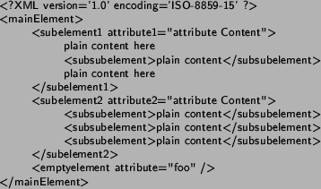
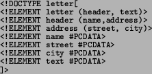
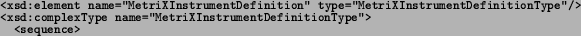
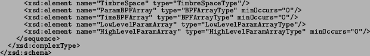

Next: MPEG-7 Up: Metadata and Meta Objects Previous: Metadata and Meta Objects
XML [www-XML, ] is a text based format to represent hierarchical
data. XML uses named tags enclosed between angle brackets to mark
the begin and the end of the hierarchical organizers, the XML elements.
Elements contains other elements, attributes and plain content. Let's
see a sample XML document:

Both attributes and plain content are simple text data. The main different between them is that an attribute is named and plain content is not. Elements also have a name. Names for attributes must be unique inside its hierarchic context, though this restriction doesn't apply to elements' name.
The power of XML is that you can adapt your own tags (elements) and tag attributes (attributes) in order to describe your own data. This is one of the reasons why XML is starting to spread rapidly. The XML specification defines the concepts of well-formedness and validity. We say that an XML document is well-formed if it has a correct nesting of tags. In order for a document to be valid, it must conform to some constraints expressed in its document type definition (DTD) or its associated XML Schema.
A DTD file defines the constraints and structure of a set of XML files
but by using a completely different syntax from XML. Here is an example
of a basic DTD file:

The presented DTD defines: Nesting rules, e.g., a letter is composed of a header and a text. Very simple datatypes, e.g., a name is a PCDATA (parsed character data). Two kinds of items can be defined in a DTD: elements and attributes. Basically elements are tags (name between angle brackets), while attributes are parameters of elements.
On the other hand XML-Schema is a definition language for describing
the structure of an XML document using the same XML syntax and it
is bound to replace the existing DTD language. It is thus a tagged
textual format but it also includes support for most Object Oriented
concepts[www-XMLSchema, ]. The purpose of a schema is to define
a class of XML documents by using particular constructs to constrain
their structure: datatypes, elements and their content, attributes
and their values. Schema can be seen as an extended DTD. More important
for many purposes is that schemas may be written in XML. Using XML
as the document format for schemas allows users to employ standard
XML tools instead of specialized applications. See the following example1.3:
<xsd:schema xmlns:xsd="http://www.w3.org/1999/XMLSchema">

<xsd:element name="Generators" type="GeneratorsType"/>

It is important to note that there are already quite a few multimedia applications of the XML language. See for example [www-XMLMusic, ] for a list of music-related XML applications. But probably the most ambitious project for using XML metadata is that of MPEG-7, the multimedia description standard, which will be described in the next section.
2004-10-18